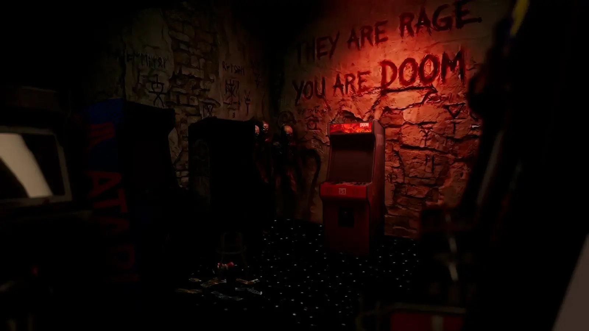

WTT - DoomArcade
- Downloads
- 256
- Favourites
- 3
- Mod lists
- 6
THE TIME FOR DOOM IS UPON US
This mod adds a fully playable, custom‑built Doom arcade cabinet to your hideout, unlocked through a new Mechanic quest chain built around salvage zones on Interchange. Once it’s installed, you’ll be able to walk up to the cabinet and boot into multiple games:
-
A unique and custom made THE CITY.WAD entry, “THE CITY Factory of Doom,” created by Tarkin for his video here, fleshed into a playable minigame specifically for this mod by yours truly
-
Shareware demo of Doom 1 so you can enjoy classic 2D shooter action while your friends sort their loot
The quest chain becomes available after you fully upgrade the broken wall and open the back room of the hideout. Mechanic then sends you to Interchange on a multi‑part salvage mission that uses WTT CommonLib’s new salvage zone quest type for one‑raid salvage‑and‑stash objectives. Finish his four‑part sequence and his techs will install the cabinet in your hideout, pre‑loaded with the THE CITY Doom game and the included Doom selections.
Once the cabinet is installed, you can run full sessions entirely inside its screen, with classic CRT‑style visuals and bit‑crushed arcade audio driving the experience.

This wouldn’t exist without the following individuals:
- EpicRangeTime - Arcade cabinets, custom item textures, audio board asset work, renders, shaders, being a cool fella
- Tarkin - Creator of the custom THE CITY factory Doom game featured in the cabinet (used in his video here https://www.youtube.com/watch?v=K_rs5V6m5KU)
- Tron - Testing on ridiculous aspect ratios and being willing to break everything on a wide monitor, and also being my bestie
Demonstration Video (Yes, it’s Live Flea Prices, but the same concept applies to all of my mods, I’m not making mod-specific extraction example videos):

You can add new entries to the arcade’s game list by editing the GameMetadata used by the mod
File locations
-
Game metadata JSON:
BepInEx/plugins/WTT-DoomArcadeClient/GameMetaData/GameMetaData.json -
Preview images:
BepInEx/plugins/WTT-DoomArcadeClient/GameMetaData/Images/ -
WADs:
BepInEx/plugins/WTT-DoomArcadeClient/WADs/ -
(and if needed) SoundFonts:
BepInEx/plugins/WTT-DoomArcadeClient/SoundFonts/
Basic IWAD entry
For a simple IWAD (no extra dehacked patches), add a block to the gameMetas array in GameMetadata.json:
{
"wadFileName": "DOOM.WAD",
"previewImage": "doom.png",
"displayName": "DOOM (1993)",
"description": "Classic Doom: Tech-base invasion to Hell across 3 episodes. Tight corridors, key hunts, and demon hordes in the original 1993 FPS."
}
-
wadFileNamemust match the file name of your WAD. -
previewImageshould be a PNG/JPG you placed in the Images folder. -
displayNameand description are what players see in the cabinet menu.
Adding WADs with DeHackEd support
For WADs that ship with DeHackEd patches and optional PWADs, follow the pattern used by Army of Darkness Doom II:
{
"wadFileName": "AODDOOM2.WAD",
"previewImage": "aoddoom2.jpg",
"displayName": "Army of Darkness Doom II",
"description": "Army of Darkness Doom II. Groovy boomstick action and chainsaw mayhem in a Doom II total conversion.",
"iwadFileName": "DOOM2.WAD",
"pwadFileNames": [
"AODDOOM2.WAD"
],
"dehFileNames": [
"AODDOOM2.DEH"
]
}
Works the same as a normal entry except:
-
pwadFileNameslists one or more PWADs that should be loaded on top. -
dehFileNameslists any DeHackEd patches to apply for that entry.
Use this structure whenever you want the arcade to boot a specific IWAD+PWAD combo with its own DeHackEd rules, instead of just running a single WAD file.
What is Welcome To THE CITY?
Welcome To THE CITY (WTT) is a mod for SPT AKI that has been in development for over a year. What started as a small passion project has grown in size to incorporate 15+ core members as well as contributions from other well-known mod authors and friends of WTT alike.
How does Welcome To THE CITY change the game?
As a mod, WTT overhauls SPT AKI, touching on almost every vanilla game system, as well as adding completely new systems to the game and its core mechanics. Inspired by open-world hardcore survival projects like STALKER: Anomaly and STALKER: GAMMA, WTT takes SPT’s artificial multiplayer MMO difficulty adders and replaces them with a challenging world economy, loot scarcity rebalancing, a lore friendly quest overhaul, and a map-traveling system built from rewritten portions of the Traveler mod allowing seamless travel between maps. Aside from its changes to the game’s core properties, WTT also adds to the world’s variety of traders, NPC’s, characters, items, and quests:
- Over 1,000 custom bundles adding new weapons, attachments, wearables, containers, food, medical, and barter items.
- New bosses with their own custom gear that will be properly incorporated into WTT’s quest lines.
- New, meaningful traders with their own lore-friendly quests and narrative elements to help the player progress through the story-line of WTT.
- New playable characters and outfits that will add to the player’s customization abilities.
- New quest types incorporating brand new map extraction points, putting the player’s knowledge and familiarization of SPT’s maps to the test.
Welcome To THE CITY stands as one of the largest mods created for SPT AKI thus far.
When does Welcome To THE CITY release?
Thursday.
Which Thursday?
TBD
Want to follow our progress?
You can follow the project through it’s development in our discord here:
Version
1.0.0
But does it run DOOM?